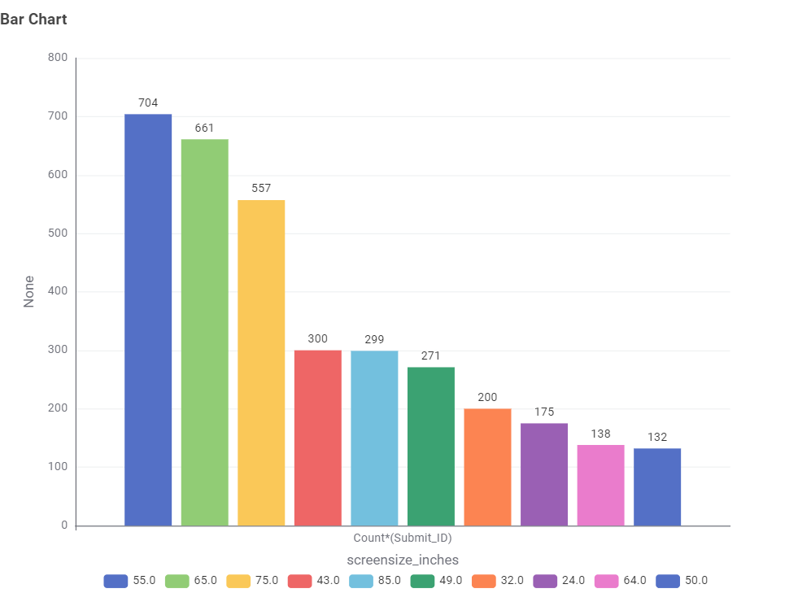

Television Energy Facts 📺
Standby Mode
Most TVs use less than 1W in standby — but leaving it on all year still costs money!
Energy Star TVs
Choosing an energy-efficient TV can save up to $50 annually in electricity bills.
Average Usage
Australian households average 4–5 hours of TV per day, consuming around 100W.
TV Energy Insights: Data Story
This section presents findings from the Australian Government’s Television Energy Rating dataset. The aim is to help Australian consumers make informed decisions about technology, size, brand, and efficiency.
What type of TV screen technologies are currently available in Australia and which are the most frequent?
Most TVs use less than 1W in standby — but leaving it on all year still costs money!
What screen sizes are currently available, and which are the most frequent?
Most TVs use less than 1W in standby — but leaving it on all year still costs money!
Which brands have the greatest number of different models?
Most TVs use less than 1W in standby — but leaving it on all year still costs money!
Which type of screen technology consumes the least amount of power?
Most TVs use less than 1W in standby — but leaving it on all year still costs money!
What is the relationship between screen size and power use?
Most TVs use less than 1W in standby — but leaving it on all year still costs money!
What is the relationship between star rating and screen size?
Most TVs use less than 1W in standby — but leaving it on all year still costs money!